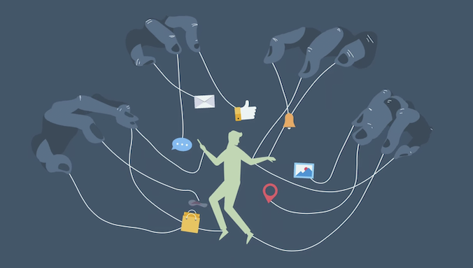
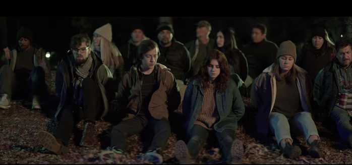
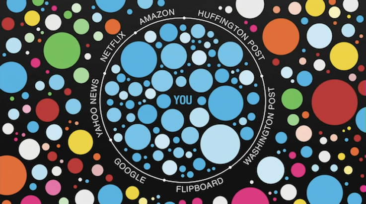

Er sosiale medier et problem som bør reguleres strengere enn i dag? Hvorfor/Hvorfor ikke?
Jeg er både enig og uenig med at sosiale medier bør reguleres strengere. Man vil gjerne si etter å ha sett Netflix dokumentaren The social dilemma at «ja så klart bør sosiale medier reguleres strengere enn det blir gjort i dag», men jeg fikk ikke helt den samme reaksjonen. Jeg synes de har mange gode og viktige argumenter for å skulle passe ekstra godt på når man bruker sosiale medier, som man ikke skal se bort ifra. Men jeg synes det var litt vanskelig å fokusere og høre etter på disse argumentene fordi jeg ble distrahert av en historie de fortalte mens de snakket om de negative sidene ved sosiale medier.

Historien handler om en familie hvor to av de tre barna i familien er veldig opptatt av sosiale medier og mobilen sin mens det tredje barnet er mer klar over hvilke konsekvenser «avhengighet» kan få. Jeg sier avhengighet i anførselstegn fordi det er et veldig strekt ord å bruke, om du sliter med å legge mobilen fra deg vil det ikke si at du er avhengig. På SNL står det om avhengighet:
«Avhengighet brukes i dagligspråket om noe en ikke klarer seg uten eller er overdrevent, nærmest tvangssperret opptatt av.»
Mens når man snakker om avhengighet som kan ødelegge livene til folk som f.eks rusavhengighet eller avhengighet av pengespill. Jeg mener man skal vise respekt til dem som faktisk sliter med slik avhengighet ved å ikke bruke ordet på noe som ikke er ekte avhengighet. Altså, overdreven mobilbruk få like alvorlige konsekvenser som rusavhengighet. Videre til historien. Hovedpersonen i er en gutt i rundt 16-års alderen. Han sliter med å legge fra seg mobilen sin og ser ikke helt hvordan sosiale medier kan påvirke handlingene hans. Vi får også se hvordan innsiden av mobilen hans jobber med å sende han innhold for å få han til å bli på mobilen så lenge om mulig. Dette skal forestille algoritmer. Lang historie kort så ender denne gutten opp med å bli veldig påvirket av innholdet som blir vist til han at han ender opp midt i en protest hvor han blir satt i håndjern av politiet. Jeg synes to av temaene de tar opp i denne historien er veldig sentrale og viktige å være klar over når man bruker sosiale medier, men jeg synes de viste det på en litt feil måte.

Det første viktige temaet de tar opp er måten disse sosiale mediene er bygget opp, ikke for å hjelpe oss, men for at skaperne skal tjene penger. Appene består av masse algoritmer som sporer hva du gjør på slik at den kan sende deg innhold som vil få deg til å bli i appen så lenge som mulig. Så om du er veldig glad i f.eks hunder og søker opp og liker bilder av hunder fungerer algoritmen slik at dette lagres og de vil jobbe for å vise deg flere bilder av hunder og hunderelaterte ting i reklamer og den slags. Bare fordi de overdramatiserte litt hvordan disse algoritmene arbeider i dokumentaren betyr det ikke at de ikke eksisterer. Om man ikke er klar over det faktum at appene du bruker er laget og designet på en slik måte at du skal bli der så lenge som mulig kan det få konsekvenser. Det kan være forskjellige konsekvenser som for eksempel at det tar opp veldig mye av tiden din og at man ikke lenger klarer å rekke ting, eller komme tidsnok fordi man er for opptatt. Jeg tror at hvis man er klar over hvordan apper er designet vil det naturlige konkurranseinstinktet hjelpe med å motbevise modellen til sosiale medier slik at man kanskje ikke tar dem like mye i bruk. Men det er nok lettere sagt enn gjort, noe de i dokumentaren også nevnte. De snakket om at selv om de hadde jobbet hele dagen med å få folk til å være så mye som mulig på en app og var veldig klar over hav de gjorde, klarte de ikke selv å unngå å bruke appene.
Under ligger det en video som forklarer hvordan Instagrams algoritme velger hva som skal vises på din feed.
En annen ting som jeg mener er utrolig sentralt og viktig å snakke mer om nå er det som kalles «filter bobler». Det handler om at sosiale medier og andre søkemotorer bruker informasjon om det du har søkt opp tidligere noe som vil si at du får se det du vil se. Dette er et veldig aktuelt tema man bør snakke mye mer om under valg i Norge og alle andre land. Dette er veldig viktig å være klar over og snakke om fordi det kan hjelpe mennesker å forstå tankegangen til hverandre. Om man bare følger med på sine egne sosiale medier vil man ikke kunne bli påvirket av andre miljøer, kulturer, tankeganger og meninger. Om man bare blir påvirket av sine egne sider på sosiale medier vil det være med å skille folk i land, noe man kan se eksempler på i for eksempel USA.

Men er det bare negative ting med sosiale medier? Nei, så klart ikke. Man kan finne uendelig mange meninger om sosiale medier er negativt eller positivt. Jeg vil nevne noen ting jeg synes er positivt med sosiale medier, noe jeg synes de i dokumentaren også burde fokusert litt mer på.
Sosiale medier hjelper med å holde kontakt med folk og møte nye mennesker. Rundt starten av mai 2021 var jeg inne på en app hvor jeg kunne chatte med mennesker over hele verden. Plutselig kom jeg i kontakt med en gutt fra USA som skrev at han liker å spille volleyball og interesserer seg for verdensrommet. Jeg valgte å ta kontakt og vi begynte å snakke sammen. Samme dag la vi hverandre til på snapchat og førte samtalen videre der, med både video chat og meldinger. Vi snakker fortsatt så ofte vi kan og har planer om å møtes i fremtiden. Jeg har ingen andre enn sosiale medier og internett å takke for at jeg møtte en jeg vil kalle en nær venn. I denne sammenheng synes jeg også en tekst vi leste i engelsken er vert å nevne. Vi leste om en gutt som het Mats som var veldig aktiv i rollespillverden hvor han ble kjent med mange nye mennesker på nettet. Men foreldene hans innså ikke hvor mange venner Mats faktisk hadde før etter at han døde.
Sosiale medier er også en plass hvor alle har muligheten til å uttrykke seg og dele sine interesser. Apper som YouTube, Tiktok og Instagram fokuserer på å dele bilder og videoer hvor man kan utfordre sine kreative evner og dele interessene sine. Da kan man komme inn i miljøer med folk som har samme interesser og inspirere andre til å prøve ut nye ting. Mulighetene er endeløse.
Selv om sosiale medier er gøy, skal man ikke la det ta opp for mye av tiden sin. Noe jeg merker gjør at jeg vil bruke mobilen min mer er notifikasjonene som konstant fanger oppmerksomheten min. For å hindre dette prøver jeg å ha mobilen min på ikke forstyrr så ofte som mulig og iblant tar jeg også mobilen min helt av. Det er heller ikke nødvendig å ha med seg mobilen over alt. Ellers vil jeg fortsatt konkludere med at jeg mener at i noen tilfeller kan sosiale medier være et problem, men ikke alltid. Jeg mener alle bør prøve å følge de anbefalte reglene for bruk av sosiale medier og at datasikkerhet bør snakkes mer om på skolen.